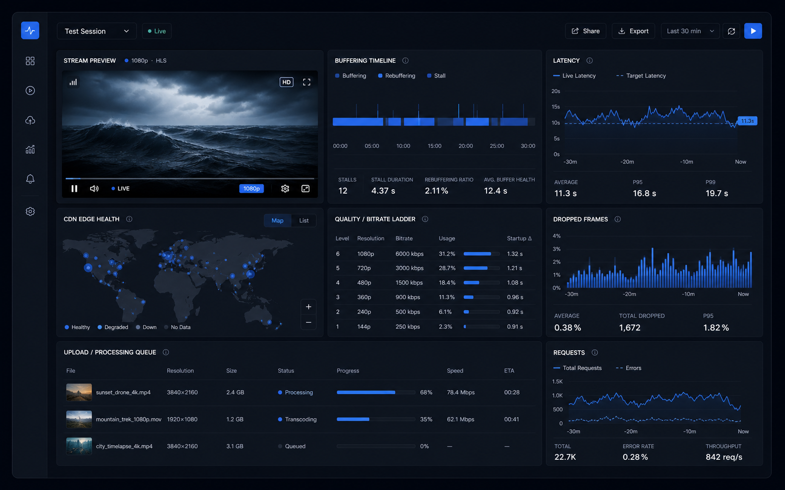

Point at a stream or upload
Test HLS, DASH, MP4, or upload endpoints with the same repeatable probe setup.
buffer.lol tests live streams, uploads, and CDN paths from one clean workspace so media teams can catch latency spikes, stalled segments, and processing delays before they hit production.

Test HLS, DASH, MP4, or upload endpoints with the same repeatable probe setup.
Track startup time, rebuffer events, dropped frames, bitrate shifts, and latency drift.
See which CDN edges, regions, or processing steps are causing slow starts and failed playback.
Measure startup delay, rebuffer frequency, segment gaps, and bitrate changes across sample sessions.
Monitor glass-to-glass delay, live edge distance, player drift, and recovery after network pressure.
Sample edge availability, cache status, response timing, and regional playback quality.
Follow ingest, transcoding, thumbnailing, packaging, and publish readiness in one timeline.
We are inviting teams that run streaming apps, course platforms, creator tools, internal media libraries, or upload-heavy products.